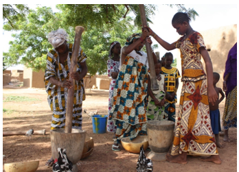
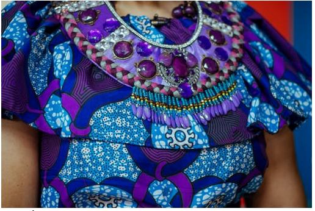
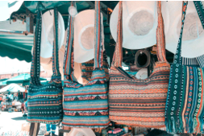
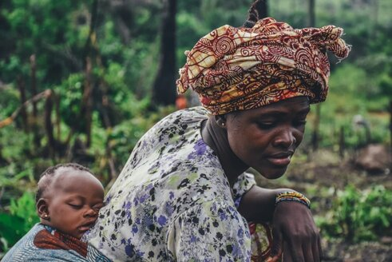

<!doctype html>
<html lang="en">
  <head>
   <meta charset="UTF-8">
    <meta name="viewport" content="width=device-width, initial-scale=1.0">
    <meta http-equiv="X-UA-Compatible" content="ie=edge"> 
    <link rel="stylesheet" href="https://stackpath.bootstrapcdn.com/bootstrap/4.5.2/css/bootstrap.min.css" type="text/css">
    <link rel="stylesheet" href="https://stackpath.bootstrapcdn.com/font-awesome/4.7.0/css/font-awesome.min.css" type="text/css">
    <link rel="stylesheet" href="https://cdnjs.cloudflare.com/ajax/libs/hover.css/2.3.1/css/hover-min.css" integrity="sha512-csw0Ma4oXCAgd/d4nTcpoEoz4nYvvnk21a8VA2h2dzhPAvjbUIK6V3si7/g/HehwdunqqW18RwCJKpD7rL67Xg==" crossorigin="anonymous" type="text/css">
    <link rel="stylesheet" href="assets/css/style.css" type="text/css">
    <title>African Fabric</title>
  </head>
    <body>
     <script src="https://stackpath.bootstrapcdn.com/bootstrap/4.5.2/js/bootstrap.min.js" integrity="sha384-B4gt1jrGC7Jh4AgTPSdUtOBvfO8shuf57BaghqFfPlYxofvL8/KUEfYiJOMMV+rV" crossorigin="anonymous"></script>
  </body>
</html>

    <title>Mama Afrika</title>
     <a class="pr-3" href="#"></a>
  </head>
  <body>
  <section>
<div class="row container-fluid">
<!-- Just an image -->
<div class="row">
    <div class="col">

      <div class="col">
     <nav class=" row col navbar navbar-light bg-light">
  <a class="navbar-brand" href="index.html">
    
   </a>
   </nav>
   <div>
         <div>
               <span>
                 <ul class="nav justify-content-end">
                     <li class="nav-item">
                    <a class="nav-link text-success" title="Tooltip" href="gallery.html"><strong>Gallery</strong></a></span>
                       </li>
                       <li class="nav-item">
                    <a class="nav-link text-success" title="Tooltip" href="art.html"><strong>Art work</strong></a></span>
                       </li>
                     </ul>
               
               </span>
         </div>
    </div>
 </div>
 <div>
     <ul class="list-unstyled">
     <li class="media my-4">
    
    <div class="media-body">
      <h5 class="mt-0 mb-1"> Batik fabrics</h5>
      This image shows diffent types of fabric prints.
     In the Eastern part of Africa call it is Chitenge/ Kitenge. 
    Kenya, Uganda, Tanzania, Sudan, In the western part of Africa wear Ankara. 
    Nigeria, Cameroon, Ghana, Senegal, Liberia, Rwanda, and Democratic Republic of the Congo.

    </div>
  </li>
  <li class="media">
    
    <div class="media-body">
      <h5 class="mt-0 mb-1">Early stages of batik fabric</h5>
      In this image we see women in the village preparing color that will be used to print the batik fabric.
    </div>
  </li>
  <li class="media my-4">
    
    <div class="media-body">
      <h5 class="mt-0 mb-1">Clothe designs</h5>
     On occasions and in many ways either symbolically or for practical reasons. 
     Chitenges are used in different settings to convey messages. The following list 
     demonstrates uses of the cloths. 
    </div>
  </li>
  <li class="media">
    
    <div class="media-body">
      <h5 class="mt-0 mb-1">Gifts</h5>
      They can also be used to create modern  gifts to young women such as jewellery.	
    </div>
  </li>
  <li class="media">
    
    <div class="media-body">
      <h5 class="mt-0 mb-1">Hand bags</h5>
      This same fabric can be used to design women handbags.
    </div>
  </li>
  <li class="media">
    
    <div class="media-body">
      <h5 class="mt-0 mb-1">Baby's Sling</h5>
      They are used as a sling to hold a baby across the back of a mother. 
      They can hold the baby at the front as well, particularly when breast feeding. 
      sometimes worn by men but often worn by women and wrapped around the chest or 
      waist, over the head as a headscarf, or as a baby sling
  </li>
</ul>
</div>
<footer class="footer aling-bottom container-fluid">
   <div id="footer-details" class="btn-info row">   
      <div class="col-md-6 col-sm-4">
         <ul class="list-inline social-links">
           <li class="list-inline-item">
              <a target="_blank" href="https://www.facebook.com/Kitenge-111914593983140">
                <i class=" btn-info fa fa-facebook" aria-hidden="true"></i>
                  <span class="sr-only">Facebook</span>
              </a>
           </li>
           <li class="list-inline-item">
              <a target="_blank" href="https://twitter.com/home">
                <i class="btn-info fa fa-twitter" aria-hidden="true"></i>
                  <span class="sr-only">twitter</span>
              </a>
           </li>
           <li class="list-inline-item">
              <a target="_blank" href="https://www.instagram.com/">
                <i class=" btn-info fa fa-instagram" aria-hidden="true"></i>
                  <span class="sr-only">Instagram</span>
              </a>
           </li>
         </ul>
      </div>
</footer>           
  </body>
</html>